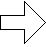

○藤竜
輪
（
リング
）
へようこそ！○
ここは、Wジャンプで活躍する藤崎竜先生関係のホームページをつなぐウェブリングです。
藤崎竜先生の作品（絵、小説など）を３つ以上
扱っているサイトなら、ジャンルが違っても登録できます。
つまり、藤崎竜先生ラバーならどなたでもOKってことですｖｖ
藤崎竜先生関係なら、同盟、企画、リング、サーチエンジン、イベント等(作品を置かないサイト)も登録できます。

仮登録する！
説明もここ（↑）にあります♪
・
登録サイト一覧
・
登録待ちサイト(キュー)検索
・
サイト検索
・
サイト内容変更、削除
・
ナビゲーションバーソース
ご連絡は
管理人:いりも irimodi[アットマーク]gmail.com へ。
＊＊ お知らせ ＊＊
2012/05/01
NEW!!
04/25頃に、登録情報を文字化けさせてしまいました。
そのため、サイト名、管理者様名、紹介文などが飛んでしまいました。
手作業で復旧中です。そのため、紹介文に関して、藤竜輪管理人の記載した文章になってしまいます。
こちら自由に編集していただいてかまいません。
パスワードは別途、各管理者様に連絡させていただきます。よろしくお願いします。
2018/11/18
悪いURLを登録する業者対策のため、仮登録をメールからにしました。
もし登録したい、という方は、遠慮せずに登録メールを送ってください。
ちょっとハードルが上がって、ごめんなさい。よろしくおねがいします。
2012/01/25
12/20～1/25まで、サイトが見られない状態になっていました。
ご迷惑おかけしました。
2011/11/29
「サイト削除」が今までバグっておりました･･･
修正しました。ご指摘いただいた方、ありがとうございます！
2010/07/18
藤竜輪のバナーを貼っていないサイト様、
旧アドレス(worlds.parallel.jp)のバナーが貼ってあるサイト様を
仮登録に戻しました。
2010/07/17
リンク切れサイトさまを、仮登録に戻しました。
一覧を、登録が新しい順に変更しました。
検索のバグを直しました。
2008/7/21～22
登録者さまにアドレス変更のメールをお送りしました。
届かなかった方が数名いらっしゃると思われます。。
2008/7/21
ウェブリングエンジンのプログラムを作り直しました。
バグがいっぱいあると思われますので、見つけた方は、援助すると思って教えてくださると嬉しいです～。
ついでにサイトの巡回もしました。2年以上更新が無いサイト様、リンク切れサイト様ははずさせていただきました。
2007/4/24
ウェブリング・ジャパン（レンタルウェブリングシステム）サービス終了につき、他サーバにて再設置いたしました。
つきましては登録者さまにメールを送らせていただきました。ご覧くださいませ。
「最近アダルト登録ばっかで、ここのリングダメだよね…」と思った方、再駆動しますので、これからは本リングを使ってください！！
新規仮登録も随時受付中です！
2007/1/17
半年もの間、管理人のメアドを間違えて設定していましたため
リング関係のメールが届かず、それにより本登録処理ができず、キューから削除されてしまった方ごめんなさい！！
メアドを正しく設定しましたので、申し訳ないのですが
再度仮登録をしていただけたら
凄く嬉しいです…！
？